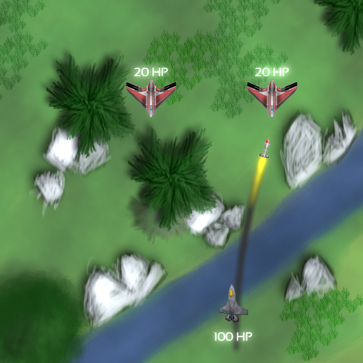

Book: SFML Game Development
In 2013, I was given the opportunity to write a book on the topic of SFML, the multimedia library developed by Laurent Gomila. I have worked with SFML since 2008. Over the years, I have been involved in many discussions around the library's design, giving me deeper insights into development. Since the beginning of 2014, I'm also part of the SFML developer team.
The book SFML Game Development was written with two other guys and explains the process of developing a full-fledged game using SFML. The target audience are programmers with experience in C++. No prior knowledge of game development is required, but the book uses several techniques that may also be interesting for experienced game developers.
The book is divided in 10 chapters. Every chapter builds on top of the previous ones and comes with a separate code base, allowing readers to understand the code on-the-fly and to experiment with the game as they like. The following topics are covered:
- Basics: introduction to SFML, game loop, time handling techniques, vector algebra
- Resource management: loading textures from files, generalizing the approach to other resources, error handling
- World: models to represent the game world and its entities, scene graphs, transforms, 2D views/cameras, world updates
- User input: keyboard, mouse and joystick input, a command system to distribute events
- States: switching between menus and the game, pause, a state stack architecture
- GUI: buttons, texts and other UI components, an interface to customize key bindings
- Gameplay: hitpoints, enemy AI, collision detection and response, bullets and homing missiles, power-ups, victory/defeat conditions
- Visual effects: behind the scenes (OpenGL and low-level rendering), particle systems, animations, shaders
- Audio: playing music and sound effects, positioning sound in 3D space
- Network: brief explanation of TCP, UDP and network architectures, implementing server and client, packet handling, latency and synchronization, cheating prevention
The game looks as follows:

Links
- Publisher website: http://www.packtpub.com/game-development/sfml-game-development -- use the code sfgde50 for a 50% discount on the e-book!
- Code repository: https://github.com/LaurentGomila/SFML-Game-Development-Book